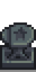

Cueva de la Maestría
| Cueva de la Maestría | |
 | |
| Cerrado: | Nunca |
| Dirección: | Bosque Tizón |
| Residentes: | Ninguno |
La Cueva de la Maestría es un área ubicada en el Bosque Tizón. Esta se desbloquea luego de que El Jugador haya alcanzado el máximo nivel en todas las 5 Habilidades, la mañana cuando se haya desbloqueado la ultima maestría al nivel máximo aparecerá un mensaje en la esquina inferior izquierda con el mensaje: "Sientes que un nuevo camino se ah abierto.". Si intenta ingresar antes de llegar a esto, aparecerá el siguiente mensaje: "Sólo un maestro de las cinco disciplinas puede ingresar ([Número de habilidades a nivel máximo]/5)". En su interior, el jugador puede encontrar:
- 5 tótems de maestría en la pared, uno para cada habilidad.
- Un banco en el centro de la cueva que dice "El sendero final".
- Una carta del Abuelo en la esquina sureste.
La carta del abuelo
En la esquina sureste, el abuelo ha dejado una carta para el jugador. La carta dirá lo siguiente:
| “ | “Mi querido <nombre del jugador>,
Si estás leyendo esta nota, has encontrado la habitación secreta que he preparado para ti. Dentro de estas paredes hay consejos, recetas e incluso algunas de mis herramientas más preciadas... Todo lo mejor de los muchos años felices que pasé en el valle. Al llegar hasta aquí, habrás demostrado que posees la habilidad y la sabiduría para hacer un buen uso de estos poderosos secretos. ¡Espero que mis descubrimientos te ayuden en tu viaje para hacer brillar la <nombre de la granja>! ¡Haz que me sienta orgulloso!” |
| — Abuelo |
Maestrías
Una vez que el jugador ingresa a la Cueva de Maestría, el juego comienza a registrar puntos de maestría que se utilizan para desbloquear una serie de maestrías. Cada maestría está asociado con una habilidad y cada una está representado en un pilar en la pared trasera de la cueva. En cualquier momento, el jugador puede ver los objetos especiales y los beneficios asociados con una maestría visitando su pilar.
Los puntos de maestría son equivalentes a puntos de experiencia de habilidad "excedentes", por encima de los necesarios para alcanzar las habilidades de nivel 10 inicial. Se acumulan sólo después de alcanzar el nivel 10 en cada habilidad. Sin embargo, los puntos de experiencia después de alcanzar el nivel de habilidad 10 que se obtuvieron jugando una versión anterior del juego no se transfieren como puntos de maestría en la versión 1.6. Se recogen y agrupan como una única cantidad independientemente del tipo de habilidad asociada con la experiencia y pueden usarse para otorgar cualquier maestría. Una maestría se puede desbloquear en un pilar solo cuando se ha acumulado una cantidad suficiente de puntos de maestría. El jugador puede elegir qué maestrías desbloquear en cualquier orden. Cada maestría elegida cuesta progresivamente más puntos de maestría que la anterior, definiendo cinco niveles de costos. El jugador puede seguir el progreso actual hacia el siguiente nivel.
La siguiente tabla muestra los costos para desbloquear cada maestría:
| Nivel | Puntos de maestría necesarios para este nivel | Puntos de maestría totales necesarios para este nivel |
|---|---|---|
| 1 | 10,000 | 10,000 |
| 2 | 15,000 | 25,000 |
| 3 | 20,000 | 45,000 |
| 4 | 25,000 | 70,000 |
| 5 | 30,000 | 100,000 |
Cuando el jugador acumula suficientes puntos de maestría para desbloquear una nueva maestría, el juego muestra un mensaje que dice "Has alcanzado un nuevo nivel de comprensión...". Los pilares de la cueva estarán disponibles para desbloquear una maestría. Las maestrías logradas se muestran en la pestaña Objetos especiales y poderes del inventario del jugador.
| Nombre | Recompensas | ||
|---|---|---|---|
Maestría de Agricultura |
Guadaña de Iridio | Se puede utilizar para cosechar cualquier cultivo. También es excelente para recolectar heno. | |
| Receta de la Estatua de las bendiciones | Tocar la estatua da una bendición distinta cada día. | ||
| Ahora puedes encontrar Galletas para Animal Doradas, que duplica permanentemente la producción de un animal de granja. No funciona en cerdos. | |||
Maestría de Minería |
Receta de la Estatua del Rey Enano | ||
| Receta del Horno pesado | |||
| Las piedras de minerales ahora otorgan el doble de gemas. | |||
Maestría de Recolección |
Receta de la Semilla de árbol místico | ||
| Receta del Tótem del tesoro | |||
| Ahora puedes encontrar Cajas misteriosas doradas, que contienen mejores recompensas. | |||
Maestría de Pesca |
Barra de Iridio Avanzada | Úsala en el agua para pescar peces. Se pueden usar hasta dos aparejos a la vez. | |
| Receta del Cebo de desafío | |||
| Ahora puedes encontrar Cofres del tesoro dorados. | |||
Maestría de Combate |
 |
Receta del Yunque | |
| Receta de la Mini-Forja | |||
| Desbloquea un hueco de equipamiento para Amuletos. Se pueden encontrar amuletos durante las aventuras y otorgan poderes especiales. | |||
Habilidades de maestría completadas
Después de completar las 5 habilidades de maestría, se encenderá una vela sobre cada uno de los pilares, se eliminará la carta de la derecha y aparecerá un sombrero en el pedestal entre los pilares de combate y recolección. También habrá un mensaje que dirá "Sientes la mano del abuelo dándote palmaditas en tu hombro..."
Curiosidades
- En la Nota Secreta #27, el Abuelo menciona un "secreto muy especial" que escondió en algún lugar del valle, refiriéndose a la Cueva de la Maestría.
- Si un jugador pasa el cursor del mouse sobre los pilares que muestran las recompensas de maestría, mostrará su cursor en lugar del personalizado.
Historial
- 1.6: Introducido.